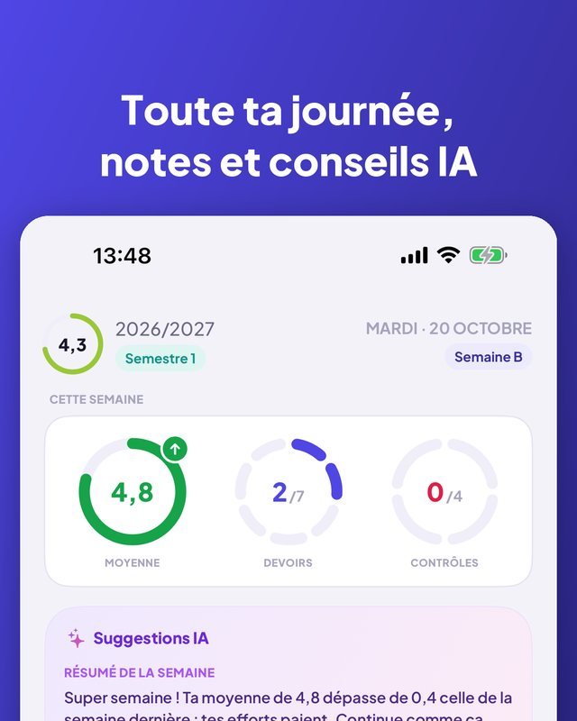
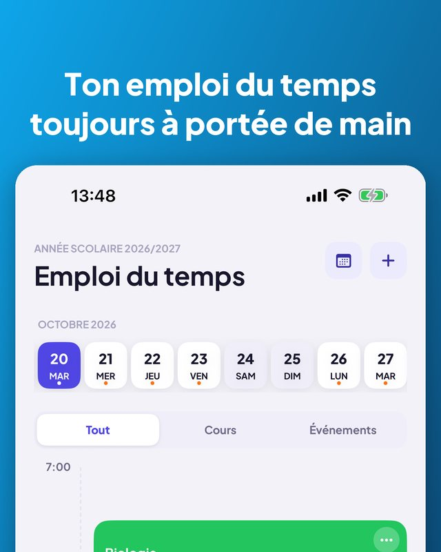
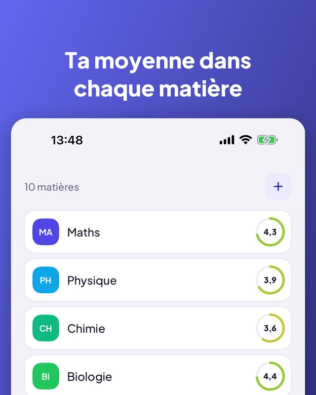
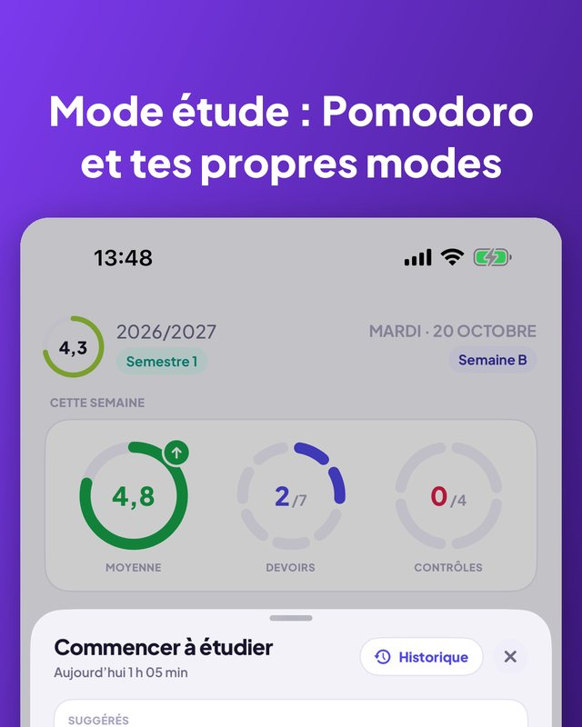
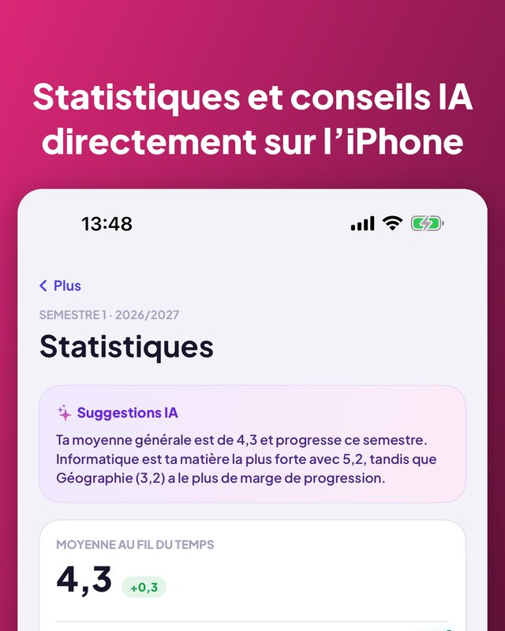

Kajet est un agenda pour l’école et les études supérieures. Toute ta journée d’un coup d’œil, des notes avec moyenne, des devoirs et contrôles avec rappels, et un minuteur d’étude avec Pomodoro. Sans compte, sans publicité.


Vues jour et semaine, salles, horaires.
Annulé, remplacé ou changé de salle pour une journée.
Sport, musique, cours particuliers, avec un rappel pour partir.
Le prochain cours sur l’écran d’accueil et verrouillé.
Tes catégories, commentaires et rattrapages.
Évolution, meilleure matière, ce qui tire vers le bas.
Crédits, notes finales, moyenne pondérée ECTS.
Fixe un seuil et vois les notes qu’il te manque.
Aujourd’hui, demain, cette semaine, plus tard. Un tap pour cocher.
Un ou trois jours avant, le soir ou à l’heure choisie.
Compte à rebours ou Pomodoro, lié à un contrôle.
7 jours, un mois ou un semestre, par matière.
Résumé de la semaine et quand réviser. Uniquement sur ton iPhone.
Demande ton prochain cours ou ajoute une note à la voix.
Commence-en un nouveau en copiant le précédent.
Suit la langue de ton iPhone.



L’app, le widget, Siri et les raccourcis existent en 13 langues. Kajet suit la langue de ton iPhone.
Sans compte, sans publicité, et tes données restent chez toi.
Pensée pour le système scolaire et universitaire polonais (notes de 1 à 6, échelle universitaire de 2,0 à 5,0, ECTS), mais utilisable partout. Pour iPhone avec iOS 17 ou plus ; les conseils IA demandent iOS 26 et Apple Intelligence.